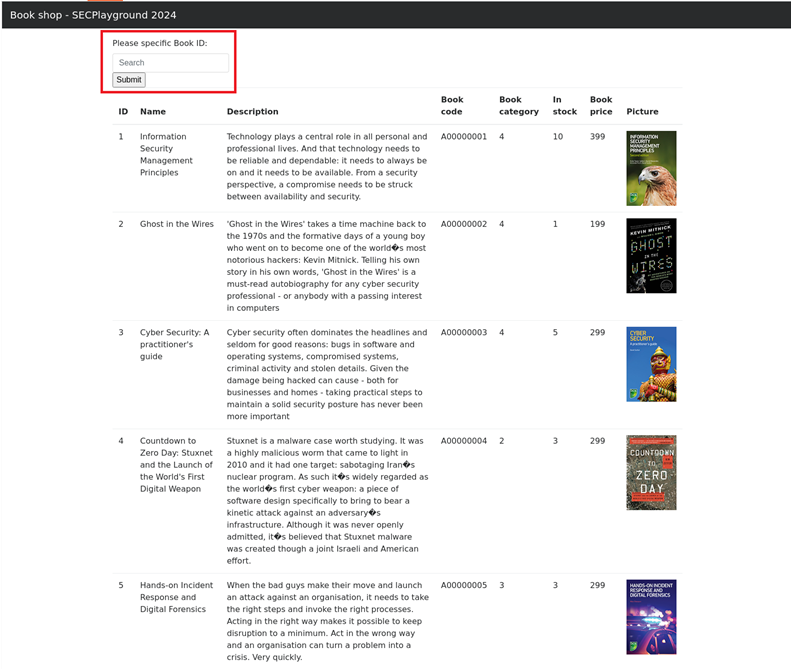
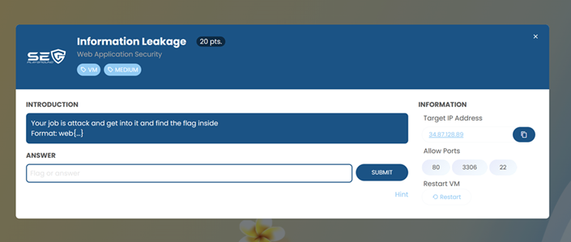
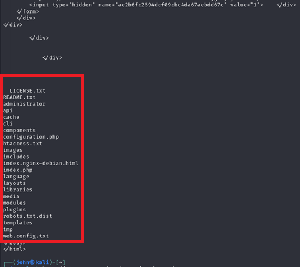
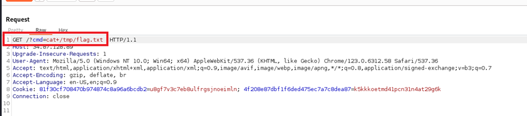

Challenges Index
Back to HomeChallenge 1: [Book Shop][Easy]
-
Solution
1. ข้อนี้ ไม่ได้ทำการ Capture โจทย์ไว้ แต่เมื่อทำการกด Link จะแสดงหน้า Book shop โดยมีช่อง Input ให้กรอกค่า Book ID เพื่อคัดกรองหนังสือที่ต้องการ
2. จากการทดสอบ โดยการใส่อักขระ ' ที่ช่อง BookID จะปรากฏ Error ทำให้ทราบว่ามีช่องโหว่ SQL Injection (ลืม Capture รูปไว้ T_T)
3. ใช้เครื่องมือ Sqlmap โดยใช้คำสั่ง 'sqlmap -u "http://35.186.158.123/" --data "BookID=1" --method POST --dbs' จะได้ รายการฐานข้อมูล (DB) ออกมา และพบว่ามี DB ที่น่าสนใจ ชื่อ secret
4. ทำการ Dump ข้อมูลจากตารางที่ชื่อ Flag โดยใช้คำสั่ง 'sqlmap -u "http://35.186.158.123/" --data "BookID=1" --method POST --dump -T flag -D secret' ก็จะได้คำตอบ
Challenge 2: [Information Leakage][Medium]
Your job is attack and get into it and find the flag inside
Solution
1. โจทย์
2. เมื่อเข้าไปที่ 34.87.128.89 จะปรากฏหน้า Web Site ซึ่งเห็นสัญลักษณ์ของ CMS Joomla จึงทำการค้นหาข้อมูล พบว่า CASSIOPEIA เป็น Frontend template ของ Joomla (https://cassiopeia.joomla.com/)
3. ใช้เครื่องมือ Joomscan จะได้ข้อมูล Version และหน้า Login Admin page
4. ทำการหาข้อมูลพบว่า Joomla version น้อยกว่าหรือเท่ากับ 4.2.7 มีช่องโหว่ Authen Bypass ส่งผลให้ข้อมูลรั่วไหล (GitHub - Pushkarup/CVE-2023-23752: Exploit for CVE-2023-23752 (4.0.0 <= Joomla <= 4.2.7).)
5. ทดสอบโจมตีช่องโหว่ดังกล่าว จะได้ข้อมูลสำคัญออกมา
6. ทดสอบเชื่อมต่อไปยัง DB ด้วยข้อมูลข้างต้น และทำการแสดง DB ออกมา *(ลองเลือก DB Flag และทำการเรียกดูข้อมูลแล้วไม่พบอะไร)
7. จึงเปลี่ยนมาเลือก joomla_400 และทำการแสดงตารางออกมาดู และเลือกแสดงข้อมูลตาราง secplayground_user จะพบ username และ password ของ ADMIN
8. นำ Password ทีได้ไปเทียบค่า hash ออนไลน์ (https://crackstation.net/) จะได้ผลลัพธ์ คือ qweas
9. นำ username และ plain text password ที่ได้มาทำการ Login ที่หน้า Admin Page
10. จึงทำการหาข้อมูลที่ https://vulncheck.com/blog/joomla-for-rce พบว่าสามารถแก้ไขหน้า Template เพื่อฝั่ง Code อันตรายลงไปได้ โดยจะฝั่ง PHP Code เพื่อใช้รับคำสั่ง นำไปประมวลผลและแสดงค่ากลับมา
11. ทดสอบด้วยคำสั่ง ls
12. ใช้คสั่ง ls เพื่อแสดงไฟล์ที่ path /tmp

13. จะพบกับไฟล์ flag.txt
14. ใช้คำสั่ง cat เพื่ออ่านไฟล์ flag.txt
15. ก็จะได้คำตอบ (flag)